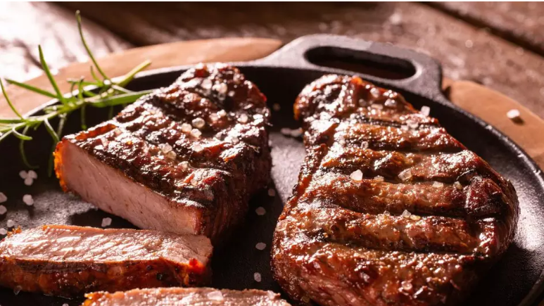

Picanha Grelhada na Churrasqueira
Ingredientes
- 1 peça de picanha em bifes grossos (1 kg)
- Sal grosso a gosto
- Farofa para acompanhar
Molho Venagrete
- 1 cebola picada
- 3 tomates picados
- 1 pimentão amarelo picado
- 1/2 xícara (chá) de cheiro-verde picado
- 3 colheres (sopa) de óleo
- Suco de 1 limão
- Sal a gosto
Modo de Preparo
- Para o vinagrete, misture em uma vasilha a cebola, o tomate, o pimentão, o cheiro-verde, o óleo, o suco de limão e sal.
- Reserve na geladeira
- Tempere aos bifes de picanha com sal grosso e leve à churrasqueira em uma grelha, com o fogo alto, por 12 minutos, virando na metade do tempo, ou até dourar.